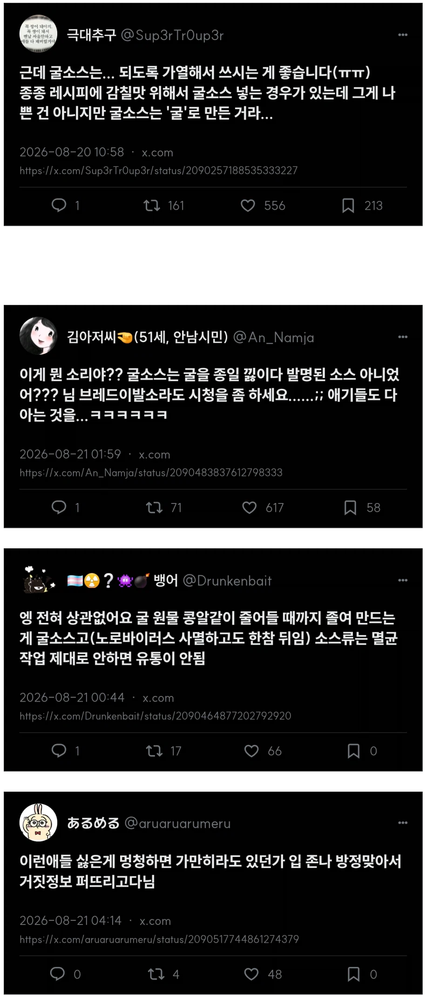

굴소스 쓰지 마세요
댓글
쟤는 환타지문학에 등장하는 몬스터 구울 ghoul 얘기로 개그친 건데, 다들 너무진지하게 받는 거 아님?
와 환타지..
이름은 그럴 듯 하지만 실제로는 굴향+설탕+msg 라고 생각하면 됨. 왜냐하면 정말 굴이나 홍합으로 굴소스나 홍합장을 만들어 보면 말도 안되는 양이 들어감. 시판되는 굴소스 가격이 말이 안됨. 그리고 굴엑기스 뽑는다는 명목으로 들어가는 어마어마한 양의 설탕. 그리고 msg...더 말 안하겠음.
한편으로 진짜 홍합이나 굴로 만든 장은 한수저만 넣어도 국이나 나물에서 바다냄새가 철철남. 근데 만들라고 하면 솔직히 욕나올 정도로 귀찮고 번거로움.
ㄹㅇ 언제부턴가 굴소스가 만능 소스로 인식되서
안들어가는 레시피가 없음
난 굴소스 넣으면 그 뭔가 텁텁하고 설명 할 수없는 뭔가 이상한 맛이나서 극혐하는데
요즘 이게 안들어가는 음식이 없더라
걍 미원 처넣으면 되는걸 아직도 미원 먹으면 뒤지는줄 아는 사람들 많아서
굴소스로 우회하는 수밖에 없음
간장일종임
구울인지 알았나보지
아무래도 굴이라 (웃음)
병신 ㅋㅋㅋㅋㅋㅋㅋㅋ
진짜 안전한지 묻는 디씨식 질문법이잖아
ㅋㅋㅋㅋㅋㅋㅋ 브레드이발소 ㅋㅋㅋㅋㅋ
시판 굴소스 중에 청정원 굴소스만 가열해서 먹으라고 되있음. 근데 소스류는 멸균 안하면 못 팔게 되있음. 청정원꺼는 가열해서 먹어야 맛이 제대로 난다는 의미로 해놨을수 있는데 그게 멸균이 안되있어서 그냥 먹으면 식중독 걸린다는 소리가 절대 아님.
저런거 정신병의 일종같음
가짜뉴스의 원흉들
짜장소스는 해병 진액으로
어떤 ㅂㅅ일까 하고 저양반 트윗 구경갔는데 뭔 트윗을 저리 쓰냐 스크롤 한참내렸네 하루에도 십수개씩 쓰는듯ㄷㄷ
그와중 해명있길래 긁어옴
하나하나 인용에 답변 드리기는 어렵고(자는 사이에 너무 많이 달렸어요)
굴소스 특성상 개봉 후 냉장보관 필수+구매 후 장기간 사용하게 됨의 이슈로 혹시 모를 일에 대비하여 '되도록' 가열해서 쓰는 게 '좋다'고 한 겁니다. 반드시 가열해서 써라! 가 아니고요.
수고하세요.
잘못 인정 안하고 끝까지 기싸움 하는것까지 완성 ㅋㅋㅋㅋ
생으로 먹어도 되는데 볶음류나 볶음밥같은 곳에 어울리는만큼 가열해야 향과 감칠맛이 더욱 좋아진다고 설명하고있음